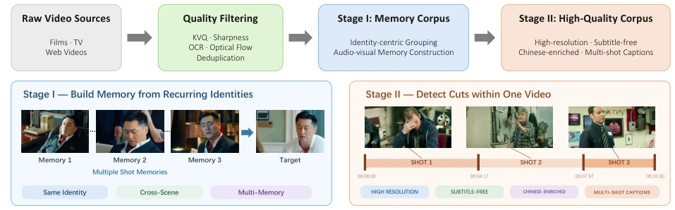
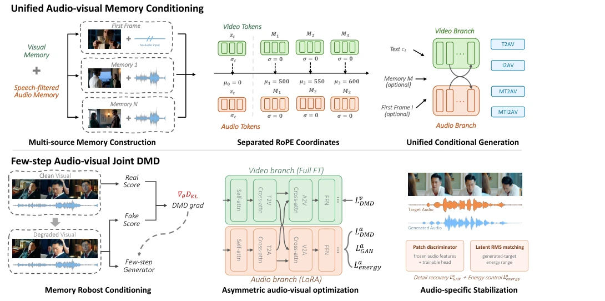
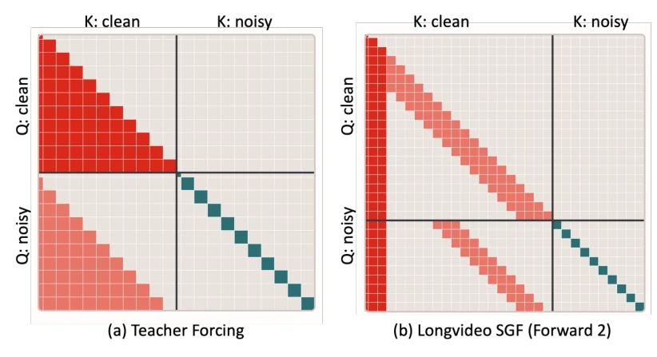
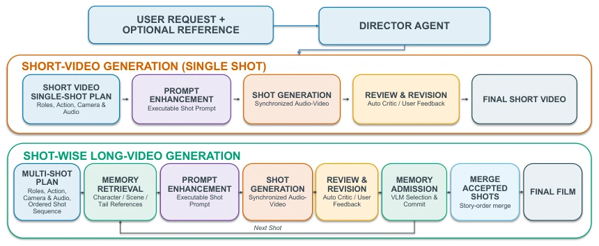
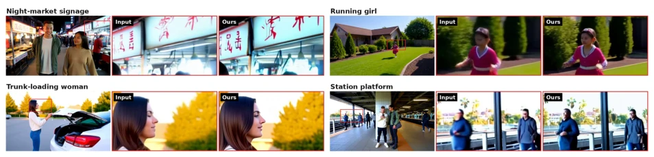
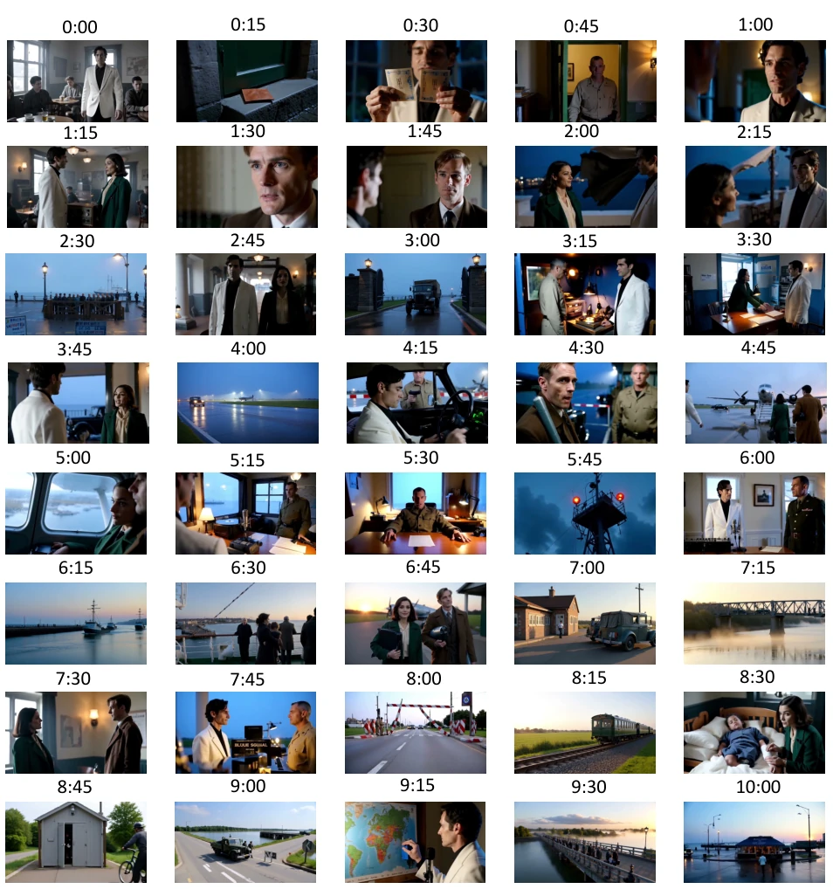
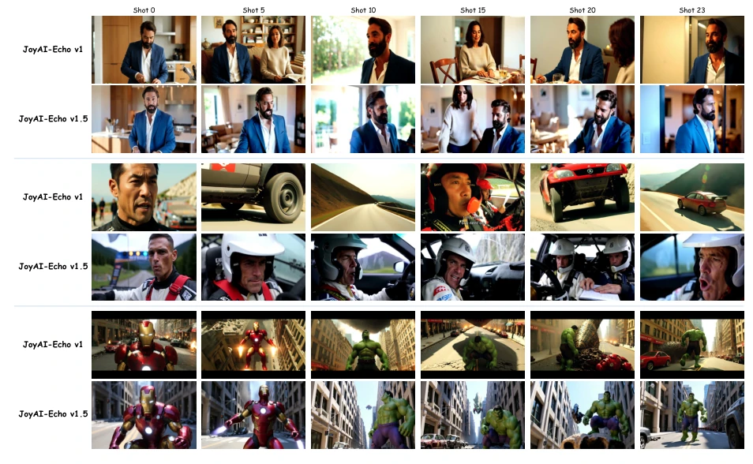
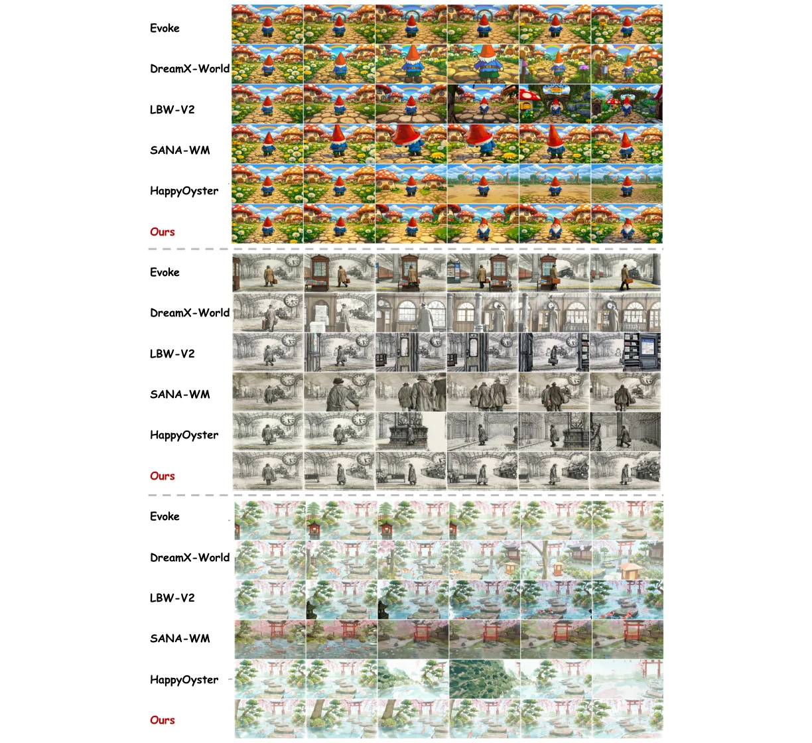
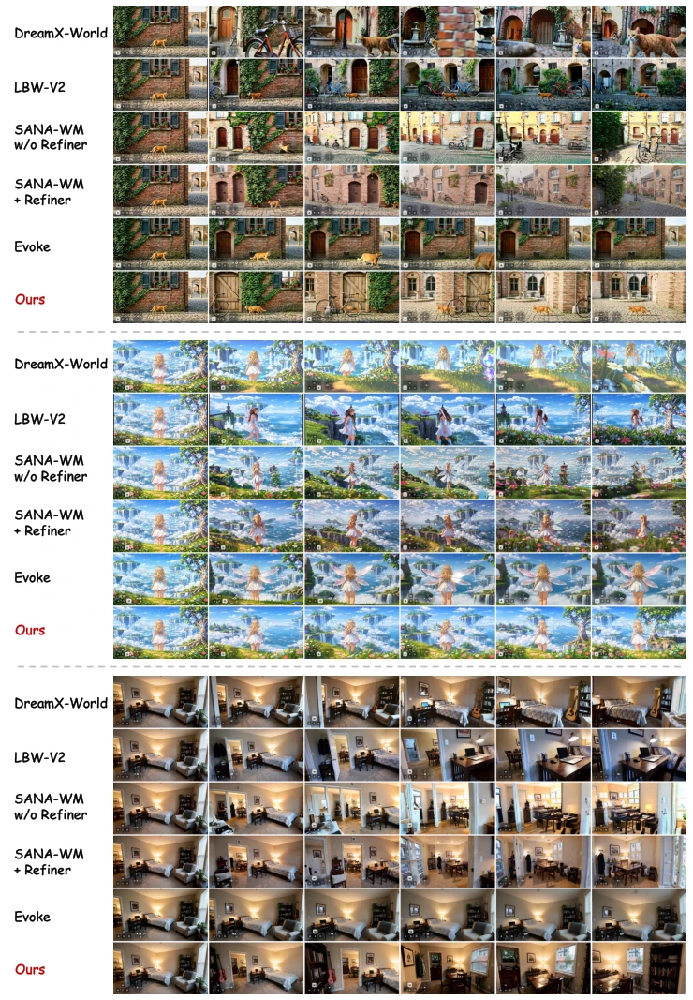
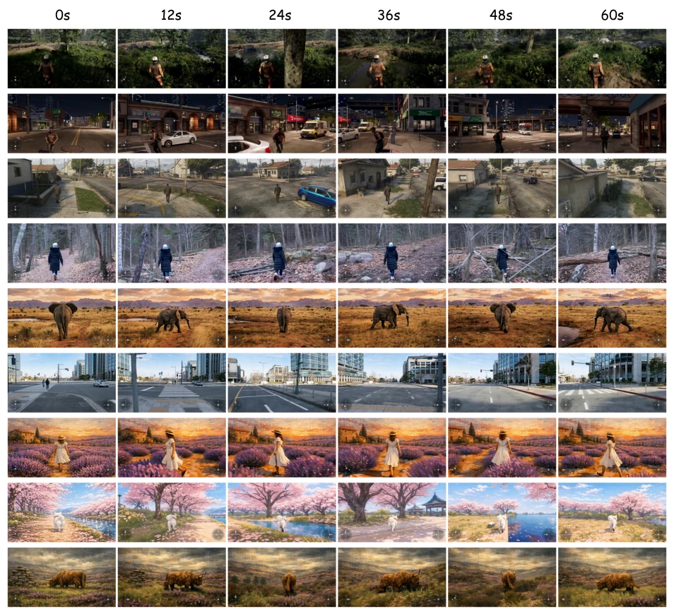

JoyAI-Echo-1.5 attempts to enable video generation models to learn "memory", no longer reinventing the wheel for every frame like some models. It implements a cross-shot memory mechanism, piecing together visual and voice evidence, attempting to solve the persistent issues of character face blindness and voice drift in long videos. The world model version even directly equips the camera with 6-DoF navigation, allowing generated videos to "follow commands". However, this still relies on a large amount of carefully cleaned data, and although the distilled Few-step generation is fast, it still relies on random memory degradation to prevent collapse, indicating that stability still relies on "scaring" the model. Overall, JD has indeed invested heavily in long-range consistency this time, but the "interactive world" is currently more about camera view switching, still far from true embodied interaction, and optimization of computational budget still appears conservative.
Video generation is shifting from isolated clips to long narratives and interactive worlds, but existing models are limited by fixed time windows, prone to forgetting identities and drifting in self-generated histories, and struggle to convert heterogeneous action inputs into consistent motion. Although JoyAI-Echo-1.0 [17] introduced long-term memory, it still has deficiencies in long-range consistency and generation efficiency. Existing models lack the ability to aggregate cross-shot identity evidence, and are not exposed to cumulative generation errors during training, leading to unstable streaming generation for long sequences. Furthermore, there is a lack of support for geometric control in interactive scenes, making precise camera trajectory control difficult. Therefore, it is necessary to rethink how models remember, act, and evolve over time, building systems that maintain character identity, follow user control, and remain stable long-term, to support persistent stories and interactive worlds.

Figure 1 Two-stage data construction pipeline of JoyAI-Echo-1.5. Raw videos are quality-filtered and organized into an identity-centric Memory corpus and a high-quality corpus with broader resolution, language, and multi-shot coverage.
方法Method
整体采用两阶段数据课程与统一条件生成框架。数据上，Stage I 构建以身份为中心的跨镜头记忆语料，Stage II 补充高质量多镜头数据。模型核心是统一音频视觉记忆条件化，通过 RoPE 坐标分离目标、历史记忆与初始记忆，利用语音过滤音频增强身份稳定性。训练采用因果 Few-step 生成器，通过分布匹配蒸馏 (DMD) 加速。针对视频与音频的不对称性，视频分支全量微调，音频分支用 LoRA 适配。引入随机记忆退化与任务自适应权重，提升长程生成的鲁棒性。世界模型版本将异构导航输入转换为校准的 6-DoF 轨迹，通过几何感知路径注入，实现控制器无关的交互。此外，还使用了自梯度强制 (SGF) 来减少训练测试差距。
Overall adopts a two-stage data curriculum and unified conditional generation framework. In terms of data, Stage I constructs identity-centric cross-shot memory corpora, Stage II supplements high-quality multi-shot data. The model core is unified audio-visual memory conditioning, separating target, historical memory, and initial memory via RoPE coordinates, using voice filtering for audio to enhance identity stability. Training adopts a causal Few-step generator, accelerated via distribution matching distillation (DMD). Addressing the asymmetry between video and audio, the video branch undergoes full fine-tuning while the audio branch uses LoRA adaptation. Introducing random memory degradation and task-adaptive weights, to improve robustness of long-range generation. The world model version converts heterogeneous navigation inputs into calibrated 6-DoF trajectories, achieving controller-agnostic interaction through geometry-aware path injection. Additionally, Self-Gradient Forcing (SGF) is used to reduce the train-test gap.

Figure 2 Overview of memory-conditioned long-form generation and few-step acceleration in JoyAI-Echo-1.5. Top: unified conditioning with single-frame visual memories, speech-filtered audio memories, and separated RoPE coordinates supports multiple audio-visual generation tasks. Bottom: memory-robust joint DMD combines asymmetric video–audio optimization with audio-specific adversarial and energy constraints.

Figure 3 Illustration of the causal attention masks used in streaming post-training. (a) Audio-visual teacher forcing, where each noisy chunk attends to its preceding clean history and the current noisy chunk, while the clean target and future chunks are masked out. (b) Long-horizon SGF Forward 2, where the causal context is further restricted by the sink-plus-FIFO KV cache.

Figure 4 Overview of the Director Agent workflow. Given a user request and optional reference, the agent performs shot planning and prompt enhancement (PE), and supports both single-shot short-video generation and iterative long-video generation through memory retrieval, shot-level review and revision, and memory admission.
Evaluated on WBench and SANA-WM-Bench. JoyAI-Echo-1.5 outperforms long-video baselines in cross-shot consistency, visual quality, text alignment, and voice fidelity. The world model variant ranks first on WBench with an 81.7 average score, showing leading performance on SANA-WM-Bench. Ablation studies show random memory degradation effectively mitigates autoregressive cumulative error, task-adaptive weights balance optimization dynamics across different generation tasks. Long sequence generation experiments indicate the model maintains character consistency and scene structure even in 10-minute sequences, proving the effectiveness of memory and geometric control. Compared to version 1.0, 1.5 shows significant improvement in visual rendering and scene stability.

Figure 5 Qualitative effect of the SR stage on generator outputs, concentrated on the two content types that degrade first at the generator’s native resolution: small text and small faces. Smeared strokes on distant storefront signage become legible glyphs, and faces only a few dozen pixels across—including under motion—recover defined features rather than the coarse blobs the generator produces. Each cell shows the generator output with the inspected region boxed (left), followed by that region magnified before and after the SR stage.

Figure 6 Qualitative visualization of a 10-minute long audio-visual sequence generated under the Director Agent. The 10-minute example follows a wartime evacuation story set in a neutral port city. A radio operator helps two civilians escape as military control tightens and the city gradually descends into chaos. Their escape becomes increasingly entangled with checkpoints, shifting alliances, and the growing danger faced by civilians left behind. The radio operator eventually turns his broadcast network into a broader evacuation effort, connecting scattered groups and helping them find a route out of the city.

Figure 7 Qualitative comparison between JoyAI-Echo-1.5 and JoyAI-Echo-1.0 under the same long-form story. Frames sampled from temporally separated shots demonstrate the improved character consistency, scene stability, and visual rendering of JoyAI-Echo-1.5.

Figure 8 Qualitative comparison of the undistilled bidirectional multi-step JoyAI-Echo-1.5 on representative WBench Navigation cases across diverse visual domains. Given the same initial observation and navigation condition, our model better preserves scene identity and structure while producing more coherent viewpoint evolution over successive interaction steps.

Figure 9 Multi-turn comparison of JoyAI-Echo-1.5-Causal against representative few-step autoregressive world models on WBench Navigation. All models start from the same initial observation and follow the prescribed multi-turn action sequence. The three cases use (1) A →A →A →A, (2) Left →Left →Right →Right, and (3) Left →W →Right. Here, Left, Right, Up, and Down denote camera rotations, while W, S, A, and D denote camera translations. JoyAI-Echo-1.5-Causal exhibits stronger action adherence and better preserves scene style, subject identity, and world structure across successive turns, with less accumulated autoregressive drift.

Figure 10 Causal long-horizon generation of JoyAI-Echo-1.5-Causal on representative cases. Each row shows a 60-second causal rollout sampled at different timestamps. Despite prolonged autoregressive generation, the distilled four-step causal model remains responsive to navigation controls while preserving scene identity, subject appearance, visual style, and major spatial structure, demonstrating robustness to long-horizon error accumulation.